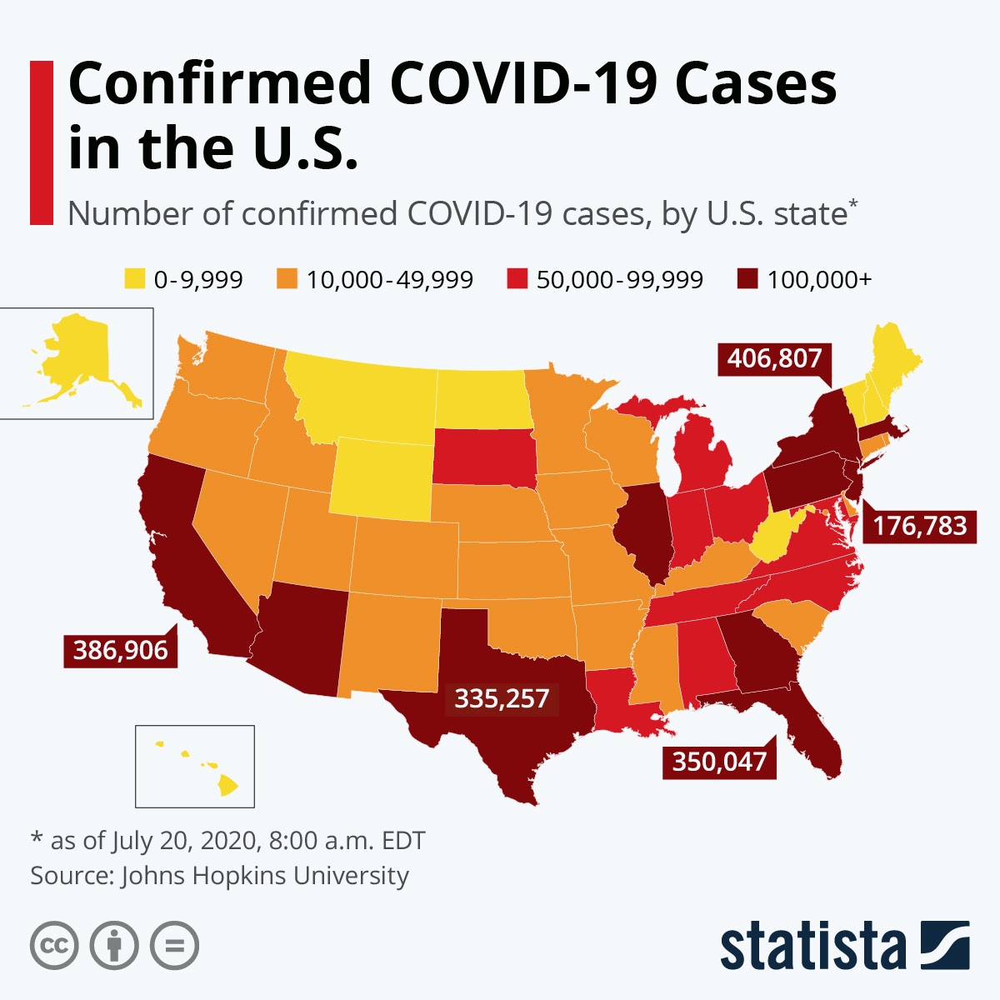
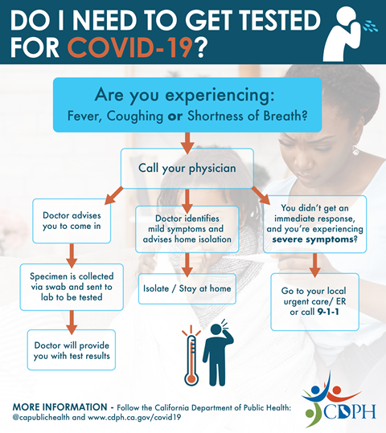
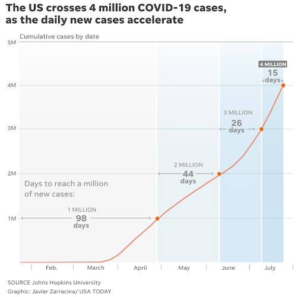

COVID-19 In the United States
An explanation of the COVID-19 disease and pandemic in America
By: Daanesh Jamal
August 15th, 2020

Dark red splotches mar the body politic (above).
As American poet Clint Smith put it, when I slide my finger across the calendar, from January to July, I feel tens of thousands of lives cry out in pain before they are suddenly silenced.
How did we get here? As I write this article, the United States has over four million confirmed cases of coronavirus and over 150,000 dead by the virus’s hand. The purpose of this article is to investigate what the coronavirus is, where it came from, and how the United States responded to the virus. I pen this article in order to do my part as a U.S. citizen to combat the noxious smog of misinformation, paranoia, and fear that only intensifies the fires of this pandemic. WIthout further ado, let’s begin.
SARS-CoV2 and COVID-19
Officially designated SARS-CoV-2 (severe acute respiratory syndrome-coronavirus-2) by scientists, this is the novel pathogen (disease causing microorganism) that is responsible for our current pandemic. Like all viruses, the coronavirus harms living things by hijacking our cells to rapidly copy itself, oftentimes killing those cells, and spreading millions of new copies to surrounding tissue to repeat the process. The presence of this coronavirus in a human being can cause a whole host of health issues: chief among them, COVID-19.Just as HIV is the virus that infects people and AIDS is the disease that it causes, SARS-CoV-2 is the virus and coronavirus disease 2019 (COVID-19) is the resulting condition. COVID-19 most commonly manifests itself as respiratory illness and its symptoms can range from mild illnesses to severe, even fatal inflammation of the lungs. Though it may share symptoms with the flu, COVID-19 is significantly more deadly and is better compared to pneumonia (infection and serious inflammation of the lungs) than a common cold. In fact, damage to the lungs is how the virus primarily kills. The virus infects then proliferates in the airways, leading the immune system to react, and in some cases, overreact lethally. As our immune system responds to the virus, white blood cells may be misdirected and kill healthy tissue, lung cells may be fatally over-stimulated, and a hyaline membrane, debris of dead cells and proteins that lines the lungs, may form, interfering with our absorption of oxygen. The virus uses the systems of our own body against us. Our lungs serve as the battleground between our immune system and the virus, and may suffer critical damage in that fight, which in turn, jeopardizes the health of the entire body. Additionally, by weakening parts of the body and the immune system, the virus leaves infected people susceptible to secondary infection from opportunistic bacteria and other pathogens. Thus, COVID-19 primarily kills people by crippling their lungs, but may leave the entire body vulnerable to other fatal pathogens.
Flattening the Curve

Given the deadly potential of the coronavirus, it is important to understand how it spreads from person to person and how we can protect ourselves. The coronavirus spreads through person to person contact, when a person touches a surface the virus is on then touches their mouth or nose or eyes, or through droplet transmission. Droplet transmission is the phenomenon where if someone sneezes, talks, or simply breathes, they release a spray of tiny particles, which, if they are infected, contain the virus. Accordingly, health experts have released a series of guidelines to inform the public on how to slow the rate of spread. The primary methods they encouraged were regular handwashing, avoiding groups of people, maintaining six feet apart from others whenever possible, and of course, wearing a mask in public. Masks, in particular, are a superb public health tool because they are a relatively cheap and effective way to both prevent the infected from spreading the virus and protect the uninfected from receiving the virus. Masks are so remarkable in context of this pandemic, we even named our organization after it. All these preventative measures are meant to decrease the number of people who simultaneously carry the disease which ensures hospitals will have more time and resources to devote to each patient, raising the chances of survival. This is a tactic called “flattening the curve” with the curve being the number of concurrently infected. Using common sense health guidelines helps to save lives.
Pandemic
The city of Wuhan, where it all started.
The first confirmed case of COVID-19 came from an open food market in Wuhan, China during early December. However, reports from the US National Center for Medical Intelligence and the South China Morning post reveal that the Chinese Communist Party knew about a novel contagion as early as November. In January, the Chinese scientists identify the novel coronavirus behind the deaths, Wuhan enters lockdown, and on January 20th, the United States reports its first case of COVID-19 in the Pacific state of Washington. By the end of the month, the World Health Organization declares the coronavirus an “international public health concern.”
However, the devastation the COVID-19 would rain on the United States in the following months was not an unforeseen disaster, but a well forecasted storm.
For decades, both Republican and Democratic administrations as well as a chorus of private individuals warned about and sought to prepare the country for a deadly outbreak. In an eerily prophetic speech from 2005, then-President Bush warned that, “A pandemic is a lot like a forest fire. If caught early, it might be extinguished with limited damage. If allowed to smolder, undetected, it can grow to an inferno that can spread quickly beyond our ability to control it…. If we wait for a pandemic to appear, it will be too late to prepare. And one day many lives could be needlessly lost because we failed to act today.”
Throughout the next 15 years, government agencies would continue to warn about the serious dangers a pandemic could pose to the United States. In 2011, The National Institute of Health sponsored a study which learned that in the case of a pandemic, “hospitals will likely experience serious and widespread shortages of patient pulmonary ventilators.” The CDC would later corroborate these findings. The Department of Homeland Security predicted in 2015 that the healthcare system could be overwhelmed in as little as 3-6 weeks, supply chain disruptions would handicap frontline workers, and called for the strategy of flattening the curve in response to an potential influenza epidemic. In 2016, the executive branch prepared a 69 page report called the Pandemic Playbook. However, previous governments also contributed to the long-term weakening of our public health system: from 2001 to 2017 the Center for Disease Control and Prevention (CDC) saw a third of its funding vanish and from 2008 to 2019 state and local health departments shed a quarter of their workforce. Clearly, our vulnerability to a pandemic was identified well before one arrived.
Unfortunately, the current federal administration would not continue the vigilance of previous governments. In March of 2018, Dr. Robert Redfield is appointed to head the CDC despite his lack of experience leading a federal agency, ignorance regarding public health science, and a previous pattern of ethical dubiousness. In May comes arguably the greatest mistake of the administration: disbanding the pandemic response team. Though a very small office, it had enormous power and would have functioned as an early warning system for SARS-Cov-2 then pivoted to coordinate health agencies, hospitals, and local governments. The president also never fills several crucial, high-ranking health officials who would have coordinated the government from local to national levels during a crisis. The following year more damaging decisions are made: the president reduces the CDC presence in China to roughly a fifth of its previous size, ends funding for a Wuhan lab that scouts for viruses with pandemic potential, and effectively ignores warnings about the virus from the US National Center for Medical Intelligence as early as November. One can only wonder how the United States would have fared if the public had the extra few months to prepare.
Throughout January and February of 2020, the CDC, lead by its overconfident and incompetent leader, struggles with serious issues. The CDC faces organizational problems as the development and rollout of testing for COVID-19 initially fail then languish in bureaucratic hell for weeks. In the entire month of February, the CDC administers less than 500 total tests across the entire country! The CDC wrestled with additional problems in establishing a unified national database of the infected, which allowed the virus to spread in the critical early months of containment with virtual impunity. They failed to swiftly initiate widespread testing and now the entire country is suffering from their mistakes. As a Wall Street Journal report learned, “the CDC botched its development of coronavirus test kits, ignored requests for expanded testing, and did not provide adequate medical supplies to the private sector.” The weakening of the CDC by incompetent leadership and long-term budget cuts and downsizing revealed itself in all of its ignominy. The CDC’s fumbling of these essential public health measures during the critical early months of our response cost time, and thus lives, in the fight against the coronavirus.
Besides the CDC, high level members of the federal government failed to respond to the virus in time, and actually worked against their own constituents. Though the executive branch did restrict travel from China at the end of January, they failed to follow up on that early action, allowing the virus to catch up and eventually overtake our containment efforts. One good deed ,no matter how positive, is not enough to contain a pandemic. The president and his top officials repeatedly minimized the threat of the virus in public during February, first calling it a hoax perpetrated by political rivals then claiming it will disappear “like a miracle.” Lower level officials would imbibe and disseminate that irreverent mindset, further delaying action. In private, the national government ignored calls from state leaders who begged for the release of emergency federal funds in order to address the terrifying shortfall of medical supplies. However, between themselves, the federal government struck a very different tone. Senator Burr of North Carolina sold $1.7 million worth of stocks after a secret briefing warned him and other congressmen about the devastating potential of the virus, and he later confessed in a private meeting that the coronavirus, “ is much more aggressive in its transmission than anything we have seen in recent history.” Obviously, it is not just a flu. Federal officials knew just how deadly and damaging the virus would be, yet they still failed to fully acknowledge the problem until thousands had already died: it was not until March that the executive branch took any serious action against the virus. Have they not heard the healthcare motto that it is always better to prevent than to heal? Clearly, while federal leaders urged the public not to worry about COVID-19, they were well aware of its full destructive potential.
Thus, the evidence clearly shows that the federal government of the United States had the foresight, resources, and capability to deal with the pandemic effectively, but through a combination of bureaucratic mismanagement, deliberate deception by top officials, and the sheer selfishness of government administrators more concerned with their own self-image, they failed to appropriately deal with the virus. They failed all of us.
Fallout

The city of Wuhan, where it all started.
The federal government’s silence and inaction during the crucial month of February forced Congress to sign the largest bailout package in American history: 2.2 trillion dollars of aid and one month too late. White House officials themselves admitted the relief package should have come sooner. Even then, the virus continued to spread. By the end of March, the United States leads the world COVID-19 cases, despite making up a mere fraction of its population, the economic gains of the past few years are eradicated, and unemployment hits record highs. April sees a million cases of COVID-19 in the United States. June, 2 million. And by mid-July the case count had doubled again to over 4 million cases. Within the 4 million infected, over 150,000 Americans have died, which is more American deaths than in Afghanistan and Iraq, more than in the Vietnam War, and more than in all of World War 1.
I hope this article has informed you on the nature of SARS-CoV-2, the severity of our global pandemic, and the shameful failures of the United States federal government. If you want to contribute what you can to the effort against the coronavirus, please support the Masked Heroes Initiative with donations and/or follow us on Instagram and Facebook. If you have any comments or challenges, feel free to contact MHI from our home page or me personally down below.
Author
 Daanesh Jamal is a rising freshman at Rice University and will major in Philosophy/Pre-Law. For any questions, comments, or concerns, please contact him at dhj1@rice.edu.
Daanesh Jamal is a rising freshman at Rice University and will major in Philosophy/Pre-Law. For any questions, comments, or concerns, please contact him at dhj1@rice.edu.
Sources
- https://abcnews.go.com/Health/coronavirus-map-tracking-spread-us-world/story?id=69415591
- https://www.nationalgeographic.com/science/2020/03/mapping-coronavirus-infections-across-the-globe/
- https://www.cdph.ca.gov/Programs/CID/DCDC/Pages/Immunization/nCoV2019.aspx
- https://www.usatoday.com/story/news/nation/2020/07/23/united-states-coronavirus-cases-deaths-timeline/5485674002/
- https://www.nytimes.com/article/coronavirus-timeline.html
- https://time.com/5805683/trump-administration-coronavirus/
- https://www.propublica.org/article/internal-emails-show-how-chaos-at-the-cdc-slowed-the-early-response-to-coronavirus
- https://www.businessinsider.com/how-us-government-fumbled-coronavirus-response-2020-3
- https://www.rollingstone.com/politics/politics-news/rolling-stone-timeline-coronavirus-america-982944/
- https://www.fda.gov/emergency-preparedness-and-response/coronavirus-disease-2019-covid-19/covid-19-frequently-asked-questions
- https://www.yalemedicine.org/stories/covid-19-glossary/#:~:text=COVID%2D19%20means%20Coronavirus%20Disease%202019.
- https://www.sciencedaily.com/releases/2020/05/200513081810.htm